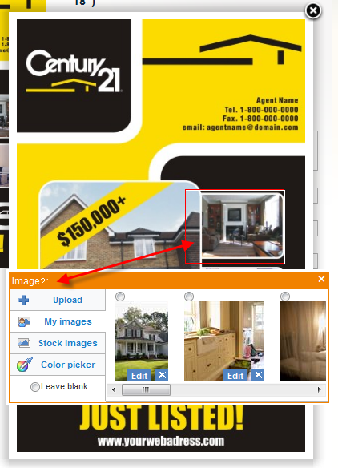

We introduced interactive design personalization features in our latest stable release of Magento web-to-print extension. More changes coming this weekend.
The way dynamic imaging shape coordinates were set up turned out to be a dead end approach and quite inconsistent. We had to change the coordinates from bottom-left corner to top-left corner, as it is in browsers and most image rendering. The units used for the coordinates are also changing.
This change should affect only those few customers who implemented their own interactive editing scripts. If you are the one and we have not contacted you, please, get in touch ASAP.
Magento implementation changes
Existing templates will continue to function with the current Magento release.
New templates processed after the change will require a new beta release, which will be published on the same day as the API change.
Still experimental
Interactive personalization will be an experimental web-to-print feature for about a month more until we finish implementation of advanced text/image editing, such as font size change, image resizing, cropping, shifting, all in context of a web-to-print template preview.

interactive web-to-print

in-preview dynamic imaging